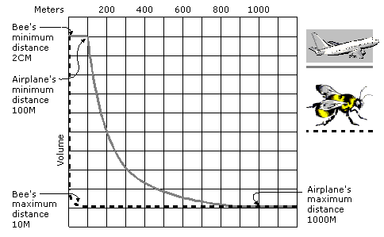

As a listener approaches a sound source, the sound gets louder; the volume doubles when the distance is halved. Past a certain point, however, it is not reasonable for the volume to continue to increase. This is the minimum distance for the sound source.
The minimum distance is especially useful when an application must compensate for the difference in absolute volume levels of different sounds. Although a jet engine is much louder than a bee, for practical reasons these sounds must be recorded at similar absolute volumes. An application might use a minimum distance of 100 meters for the jet engine and 2 centimeters for the bee. With these settings, the jet engine would be at half volume when the listener was 200 meters away, but the bee would be at half volume when the listener was 4 centimeters away.
The default minimum distance for a sound buffer, DS3D_DEFAULTMINDISTANCE, is defined as 1 unit, or 1 meter at the default distance factor. Unless you change this value, the sound is at full volume when it is 1 meter away from the listener, half as loud at 2 meters, a quarter as loud at 4 meters, and so on. For most sounds you will probably want to set a larger minimum distance so that the sound does not fade so rapidly as it moves away.
The maximum distance for a sound source is the distance beyond which the sound does not get any quieter. The default maximum distance for a DirectSound 3D buffer (DS3D_DEFAULTMAXDISTANCE) is 1 billion, meaning that in most cases the attenuation will continue to be calculated long after the sound has moved out of hearing range. To avoid unnecessary processing, applications should set a reasonable maximum distance.
The maximum distance can also be used to prevent a sound from becoming inaudible. For example, if you have set the minimum distance for a sound at 100 meters, that sound might become effectively inaudible at 1,000 meters or less. By setting the maximum distance at 800 meters, you ensure that the sound always has at least one-eighth of its maximum volume regardless of the distance.
The following illustration shows how minimum and maximum distance affect the loudness of a jet and a bee at increasing distances.

An application sets the minimum distance value by using the IDirectSoundBuffer8::SetMinDistance method. Similarly, it can set the maximum distance value by using the IDirectSoundBuffer8::SetMaxDistance method.
By default, distance values are expressed in meters. See Distance Factor.
To adjust the effect of distance on volume for all sound buffers, you can change the Rolloff Factor.
An application can override the default rolloff calculations for a sound source with a specified curve. This is done by supplying a series of points to the SetRolloffCurve functions for DirectSound buffers and streams. For more information, see IDirectSoundBuffer8::SetRolloffCurve and IDirectSoundStream::SetRolloffCurve.